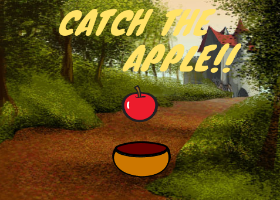

Pac man was an arcade game that was released in 1980. it still remains a favourite among many video game enthusiasts. Since then, it has also been released for the Playstation 4 Androidetc.

This is the version of it that I made on scratch
A simple catch game I made in scratch that has you catching apples falling from the sky using a bowl.
Best Python Projects
Apart from Scratch games, I have also created some python projects over the years.Here are some of my best ones:
- Simple interest Calculator
This program can help you calculate the simple interest for an amount that you deposited in a bank.